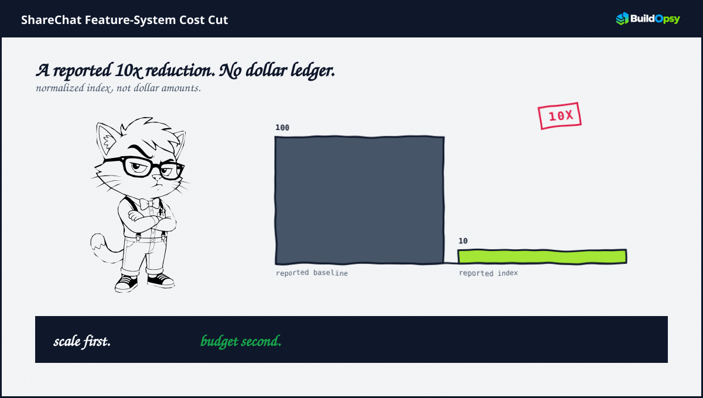
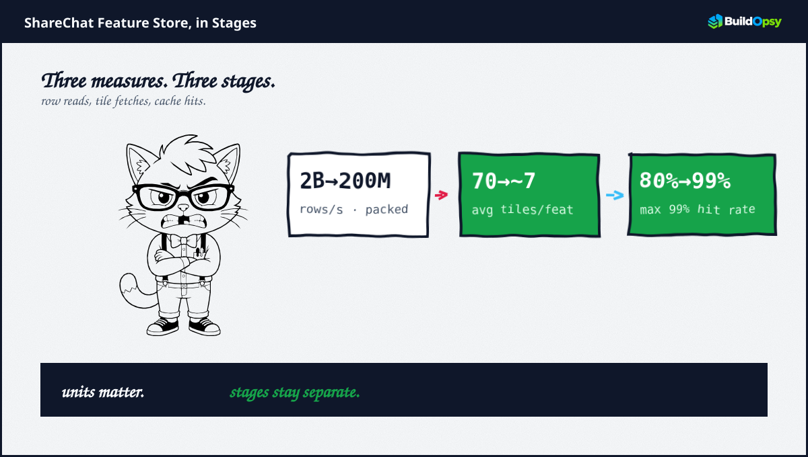

1. Keep the published workloads separate
ScyllaDB's 2024 case study describes ShareChat's feature store scaling from a test that failed around 1 million features per second toward a 1 billion features-per-second goal, without scaling the underlying database. ShareChat's March 2025 engineering post later reports that feature-system costs fell 10x over the preceding year through multiple optimizations, including changes to stream processing and autoscaling. That cumulative company-reported reduction is not attributed to one schema change here.
A separate ShareChat publication concerns recommendation candidate deduplication, not the feature store. Its cost and latency results are identified separately below. Neither system's values are treated as private Buildopsy telemetry.
2. The row shape was part of the load
The initial feature-store schema placed feature names in separate rows. The 2024 case account says popular ranking requests needed about 70 tile fetches per feature on average. It also reports a workload requirement of roughly 2 billion row reads per second before the team packed features that were requested together into serialized rows.
After that schema change, the account reports required row reads falling to around 200 million per second. It describes this reduction as 100x, but the printed endpoints divide to about 10x: 2,000 million ÷ 200 million = 10. The source does not explain the discrepancy. This teardown reports the endpoints and the arithmetic they support; it does not infer a calculation from unrounded data.

3. Tile selection reduced a different measure
The 2024 ScyllaDB account says the added tile configuration reduced average tile fetches from about 70 to 23 and required row reads from about 200 million to 73 million per second. The printed row-rate endpoints imply another roughly 2.7x reduction: 200 ÷ 73 ≈ 2.74. A 2026 ScyllaDB post summarizes the schema and tile changes together as reducing required rows from about 2 billion to 73 million per second. That is a combined recap of the stages described in 2024, not evidence of an additional measured reduction; the 2024 account supplies the 200-million intermediate. The same 2024 account later describes a range-selection algorithm reducing an illustrated 22-fetch request to 8 and the overall average to about 7. ShareChat's 2025 post also reports about seven average tile fetches. These are tile-fetch counts and row-read rates from successive stages, not interchangeable measures.
Keeping the unit visible matters: the schema change addresses rows read per second, while tile selection changes how many time buckets a feature request fetches. They improve the same service at different stages, but the measurements are not interchangeable.
4. Cache locality came after the schema work
The 2024 ScyllaDB account says a simple NGINX consistent-hash configuration did not work as expected. To meet a deadline, ShareChat split the feature service into 27 deployments and routed entities from the client. That version reached a reported 95% cache-hit rate and reduced ScyllaDB load to 18.4 million rows per second. It was a practical intermediate design, not the final cache architecture.
The same account describes a later Envoy-based proof of concept receiving 15% of traffic. The team reports 98% cache hits, 7.4 million rows per second on ScyllaDB, and a path from 1 billion to 3 billion features per second. ShareChat's 2025 post separately reports cache hits rising from an initial 80% to as high as 99% with consistent hashing. Those publications describe different stages; this article does not merge the percentages into one result.
5. The cost result is a broader report
ShareChat's March 2025 engineering post reports a 10x reduction in feature-system costs over the preceding year and names multiple contributing optimizations, including stream-processing changes and autoscaling. It does not give a dollar baseline or allocate the full reduction to the row schema, tile configuration or cache hit rate individually.
A March 2026 ScyllaDB account adds later details about cost work on the feature store. It reports that continuous-profiling-guided optimization reduced compute by more than 50%, attributing that result to ShareChat's engineering presentation. The normalized 100-to-10 image above represents the separate 10x cost claim; it is not an invoice or a per-change cost ledger.
6. A separate result: candidate deduplication
ShareChat's February 2025 account of its candidate-deduplication service reports a 90% overall cost reduction. In that separate workload, it reports a 93% reduction in streaming-job cost after moving from managed Dataflow to self-run Flink. The authors also report p99 latency falling from 30–40ms to 6–8ms after reducing the number of rows handled by deduplication; they attribute lower CPU use across the flow to less marshalling and unmarshalling. These results concern deduplication, not the feature store's 1-billion-features-per-second scale or its 10x feature-system cost report.
7. What to take into a design review
- Measure rows read per second, tiles fetched per feature and cache-hit rate separately; each points to a different optimization.
- Store co-requested fields together only when the access pattern justifies the row shape, and state how the serialization affects updates and maintenance.
- Report the workload, time window and baseline for a cost reduction. Do not assign a system-wide saving to one optimization without a measured breakdown.
- Compare the cost of a managed path and a self-run path using the same workload, including staffing, upgrades, capacity headroom and recovery.
8. The verdict
The public accounts document a feature-store scale-up, a sequence of row, tile and cache optimizations, and ShareChat's report of a 10x reduction across its feature-system costs. A separate company post documents cost and latency results for candidate deduplication. The accounts establish those reported outcomes, not a universal pattern or a line-item explanation for the entire 10x saving.
The 2024 vendor account's “100x” label for the printed 2-billion-to-200-million row-read change conflicts with the arithmetic of those rounded endpoints, which is about 10x. The available sources do not resolve that discrepancy. The design lesson is still clear: retain units and stages so that each performance claim can be checked on its own.
Sources and Method
Company-reported results are attributed to ShareChat; 2024 and 2026 feature-store technical details from ScyllaDB are identified as vendor case accounts. “About” and “as high as” qualifiers follow the source. The 2-billion-to-200-million ratio is recalculated from the printed values; no unrounded inputs are assumed. The cost-index figure is illustrative and contains no dollar amounts.
- ScyllaDB: How ShareChat Scaled a High-Performance Feature Store From 1M to 1B Features Per Second (Aug. 27, 2024)
- ShareChat Engineering: How ShareChat Built a Scalable, Cost-Efficient ML Feature System (Mar. 6, 2025)
- ScyllaDB: Optimizing a Fast Feature Store for Costs: Lessons Learned (Mar. 4, 2026)
- ShareChat Engineering: Cost-Efficient Candidate Deduplication in RecSys (Feb. 18, 2025)